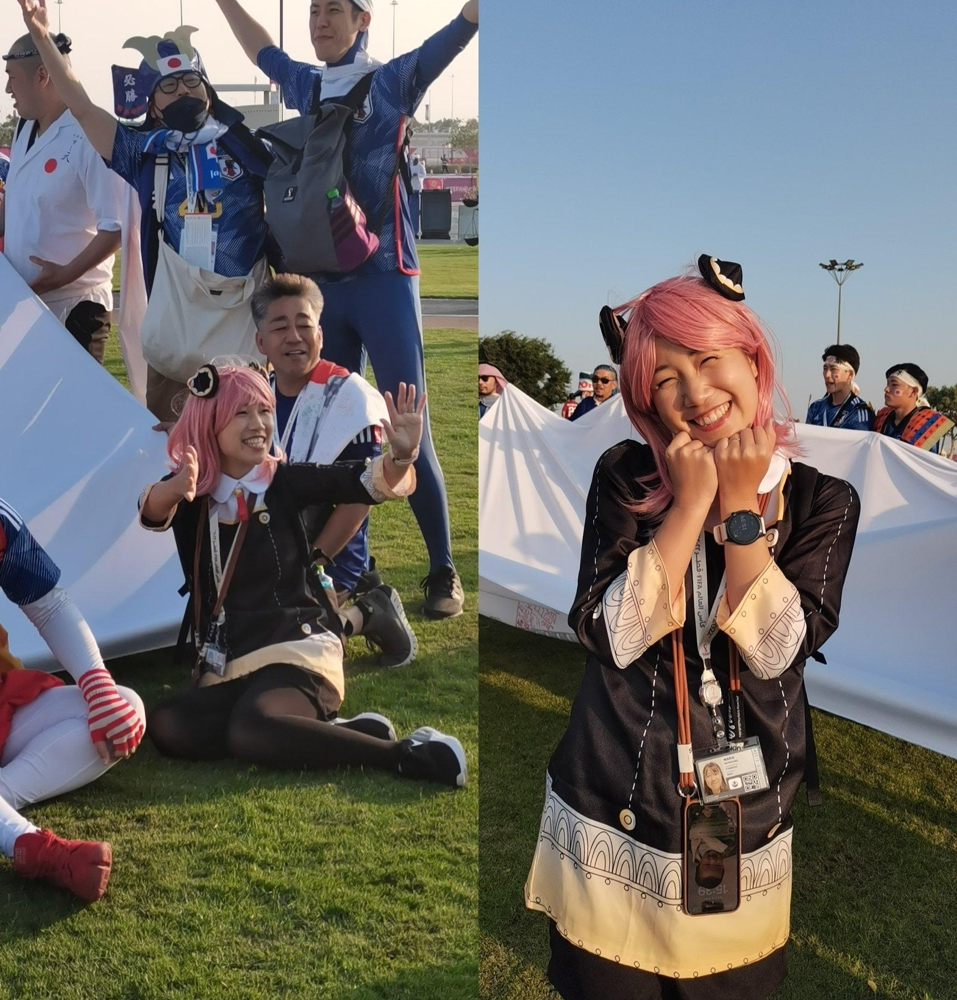

El boom de Blue Lock no tiene fin. La obra de los mangaka Muneyuki Kaneshiro y Yusuke Nomura contin�a haciendo historia. Tras erigirse como uno de los mejores animes de la temporada de oto�o (tranquilos, que la serie tendr� 24 cap�tulos y queda f�tbol para rato), contin�a sumando.
En efecto, el Mundial de Qatar de 2022 podr�a ser uno de los grandes responsables de la explosi�n del manga de Blue Lock. La gran actuaci�n de Jap�n, sumada al 'timing' del anime, habr�an generado un efecto domin� tan brutal que... Bueno, las cifras hablan por si solas: 2 millones de unidades adicionales.
La fiebre de la Copa Mundial de la FIFA Qatar 2022 est� que arde, desde el partido de apertura que gener� una infinidad de memes por la derrota del pa�s anfitri�n a manos de la selecci�n de Ecuador, e incluso con un pol�mico gol anulado. Sin embargo, la cultura del anime poco a poco se est� inmiscuyendo en este deporte, con gente en cosplay apareciendo de repente en los lugares m�s inesperados.
Sin embargo, pocas personas han logrado capturar los momentos exactos en el que esta cosplayer aparecia en pantalla. Hay varios reels en YouTube, los cuales muestran a la cosplayer saludando a camara antes del partido.
Gracias a esto, la comunidad otaku logro prestar atencion a los partidos de Japon; Aun siendo de diferentes paises, todos hemos apoyado a Japon en este mundial, por las multiples referencias que se han hecho y lo fieles que son a su cultura.
